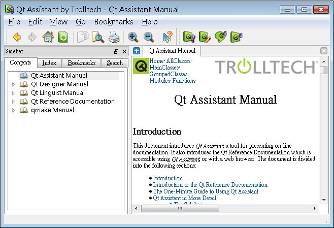

From Gossip@caterpillar
Qt4 Gossip: Qt 參考文件與範例
Qt在發行的各版本中，都附有詳細的參考文件、API文件與範例，是學習Qt的過程中所不可缺少的參考來源，Qt的文件是放在安裝目錄下的doc目錄中，或者您也可以直接連接線上文件，例如Qt4.3.3的參考文件網址是：
http://doc.trolltech.com/4.3.3/index.html
您也可以在Qt安裝目錄下的bin目錄中，找到Qt Assistant的執行檔（assistant），除了提供文件參考之外，還提供索引與搜尋等功能：

而在Qt安裝目錄下的有examples與demos兩個目錄，當中也有許多Qt的程式原始碼可以參考。